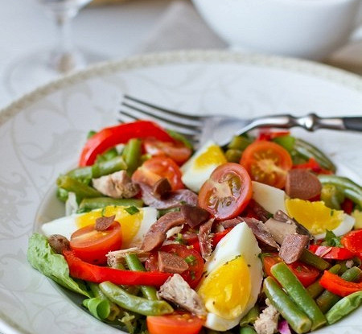

Лазанья з фаршем та помідорами
Салат Нісуаз (фр. Salade niçoise) - знаменитий кулінарний рецепт французького міста Ніцци.
Класичний варіант салату включає свіжі овочі, анчоуси, варені яйця, маслини, часник і оливкове масло.
У страву часто додають зелену стручкову квасолю, листя салату, рибу (лосося або тунця), каперси, огірки або солодкий перець.
Інгредієнти:
Салат латук - 1 упаковка
Помідори черрі - 6-8 шт
Оливки - 12-14 шт
Каперси - 8-10 шт
Варена стручкова квасоля - 230 гр
Варені яйця - 2 шт
Варена картопля - 2 шт.
Консервований тунець - 200 гр
Анчоуси - 6-8 шт
Оливкова олія - 4 ст. л.
Діжонська гірчиця - 1 ч. л.
Часник - 1 зубчик
Зерниста гірчиця - 1 ч. л.
Білий винний оцет - 2 ст. л.
Етапи приготування:
-
Приготувати заправку для салату: змішати оливкову олію, винний оцет, пропущений через прес часник і два види гірчиці.
-
Помістити на тарілки листя салату (їх потрібно попередньо замочити на годину в холодній воді і обсушити) і полити невеликою кількістю заправки.
-
Очищені яйця і картоплю нарізати скибочками, викласти їх поверх зелені. Зверху покласти відварну квасоля. Знову полити невеликою кількістю заправки.
-
Помідори черрі розрізати навпіл, викласти їх на блюдо разом з шматочками тунця і оливками.
- Зверху прикрасити салат каперсами і анчоусами. Полити залишками заправки.
-
Подавати Нісуаз разом з хрустким французьким багетом.
- Смачного!